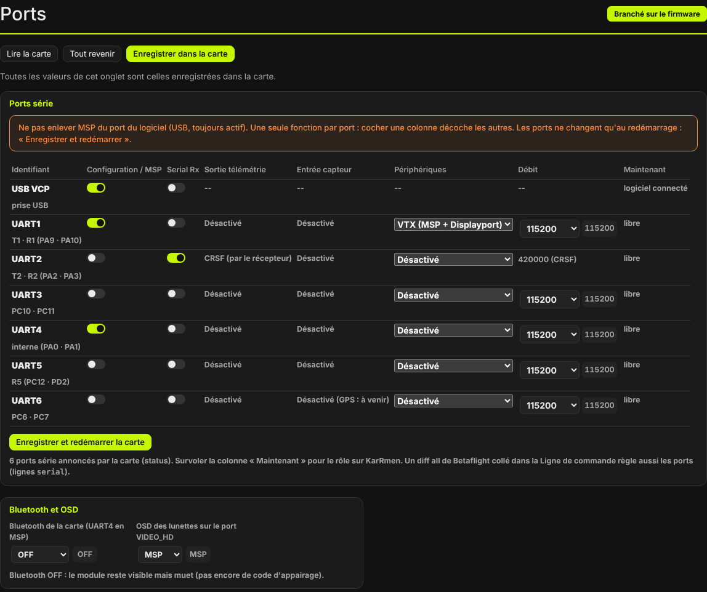
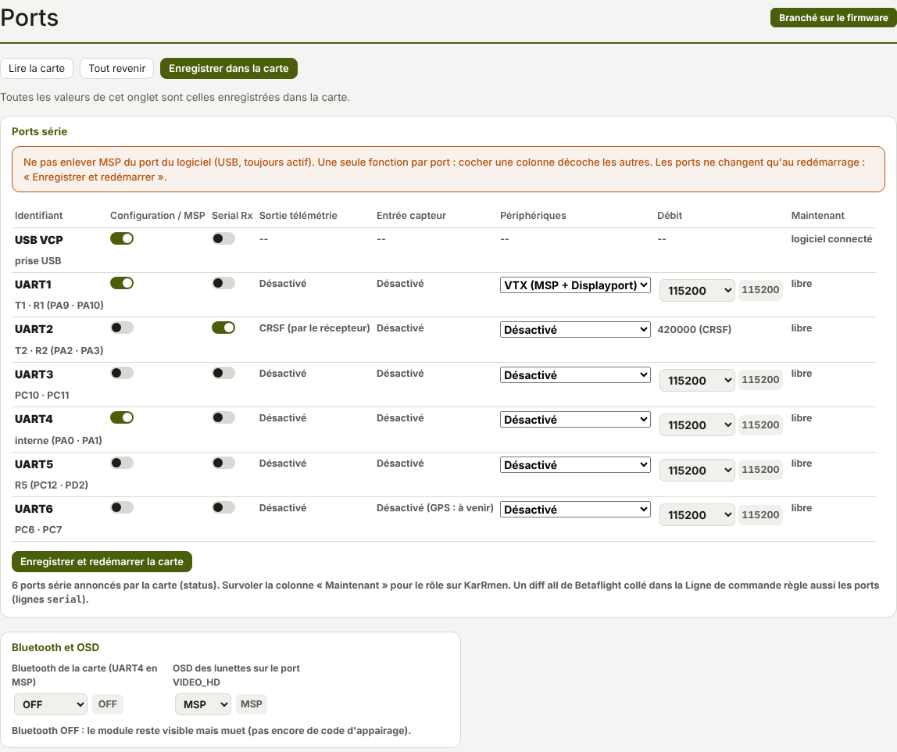

TRUEGLIDE
TRUEGLIDE Onglet Ports
L'onglet Ports dit à quoi sert chaque port série (UART) de la carte : récepteur radio, vidéo HD, MSP ou rien. Il reprend le tableau de Betaflight, une ligne par port.


Le tableau des ports
Une ligne par port : USB VCP (la prise USB), puis UART1 à UART6, avec les plots de la carte sous chaque nom. Le tableau ne liste que les ports que la carte annonce. Les colonnes :
| Colonne | Rôle |
|---|---|
| Configuration / MSP | MSP : le logiciel, une application, le Bluetooth. |
| Serial Rx | Récepteur radio série (CRSF / ExpressLRS). |
| Sortie télémétrie | « CRSF (par le récepteur) » sur le port Serial Rx : la télémétrie passe par le même port. Ailleurs : « Désactivé ». |
| Entrée capteur | « Désactivé » (GPS sur UART6 : à venir). |
| Périphériques | « Désactivé » ou VTX (MSP + Displayport) : vidéo HD, OSD des lunettes et MSP. |
| Débit | Débit du port en bauds, de 9600 à 1000000 (115200 par défaut). Le récepteur CRSF est toujours à 420000. |
| Maintenant | Ce que la carte fait du port en ce moment (lu dans status).
Survoler la case donne le rôle du port sur KarRmen. |
Les fonctions
Dans XPro, un port n'a qu'une fonction : cocher une colonne décoche les autres. Les quatre fonctions
possibles (réglage port_N_function) :
AUCUNE: port libre ;MSP: logiciel, application ;RECEPTEUR: récepteur CRSF (colonne Serial Rx) ;VIDEO_HD: MSP + OSD des lunettes (Périphériques : VTX (MSP + Displayport)).
Le port USB garde toujours MSP : c'est par lui que le logiciel parle à la carte. Le logiciel prévient sous le tableau s'il n'y a aucun port Serial Rx (la radio ne serait plus lue après le redémarrage), ou s'il y en a plusieurs (seul le premier sert). De même pour plusieurs ports VTX.
Les ports de KarRmen
Ce sont aussi les fonctions par défaut de la SpeedyBee F405 Mini dans XPro :
| Port | Plots | Fonction | Branché |
|---|---|---|---|
| USB VCP | prise USB | MSP (toujours) | logiciel XPro |
| UART1 | T1 · R1 (PA9 · PA10) | VTX (MSP + Displayport), 115200 | vidéo HD Walksnail : OSD et VTX |
| UART2 | T2 · R2 (PA2 · PA3) | Serial Rx, 420000 (CRSF) | récepteur ExpressLRS (R2 marqué SBUS sur la carte) |
| UART4 | interne (PA0 · PA1) | MSP, 115200 | Bluetooth de la carte |
| UART3, UART5, UART6 | — | aucune | libres |
Sous Betaflight, KarRmen avait la même répartition (relevé du 14/10/2026). L'UART5 y servait autrefois au capteur des ESC : inutile, l'ESC BLS 35A V2 n'a pas de télémétrie série.
Enregistrer et redémarrer
Un port ne change de fonction qu'au démarrage de la carte. Après un changement :
- Cliquer Enregistrer et redémarrer la carte sous le tableau.
- Confirmer. Le logiciel enregistre les réglages (
save), puis redémarre la carte. La liaison USB se coupe quelques secondes. - Reconnecter la carte si elle ne revient pas seule.
Les boutons du haut, Lire la carte, Tout revenir et Enregistrer dans la carte, sont ceux de tous les onglets de réglages. Un réglage changé mais pas encore enregistré porte un repère orange.
Bluetooth et OSD
Le cadre sous le tableau a deux réglages :
- Bluetooth de la carte (UART4 en MSP),
bluetooth_mode:OFFpar défaut. Le module reste visible mais muet, car il n'y a pas encore de code d'appairage.LECTUREsert aux essais : la carte répond en MSP, en lecture seule, à tout téléphone proche. - OSD des lunettes sur le port VIDEO_HD,
osd_displayport_device:NONEpar défaut, comme Betaflight ;MSPsur KarRmen.
En ligne de commande
Chaque port a deux réglages, pris au redémarrage : port_N_function et port_N_baudrate
(N de 1 à 6). La commande serial de Betaflight est acceptée : un diff all de Betaflight
collé dans l'onglet Ligne de commande règle aussi les ports.